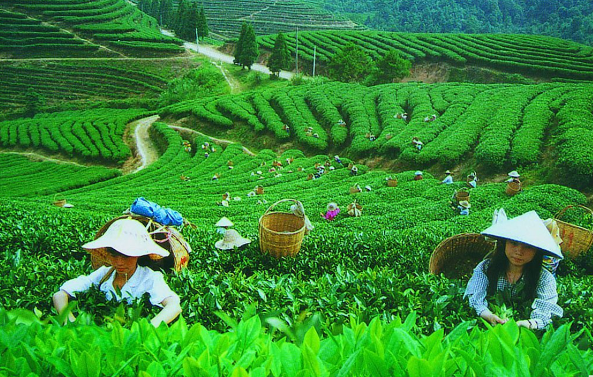

I am Shimul Dio.I come from Mymensing, sub-district of Dhobaura.I work in Baramasia Tea Estate as Store Clerk from 2019 to till now.My hobby is coding. I hope that one day I will reach my own goal. Moreover I like to play football and cricket, listening to music, reading newspaper in my free time.
01793373447, Bhujpur, Fatickchori, Chattogram
Burmasia Tea Estate's luxurious, picturesque 2930 acres of pristine tea/rubber plantation is a quality, world-class producer of tea and rubber.
Catering to foreign and domestic demand for premium brands of black tea and green tea produced by CTC Stage Processing, BTE produced 5,500,000 kg of tea in 2010 alone.
By 2015, it envisages increasing capacity to about ten million kg per annum.